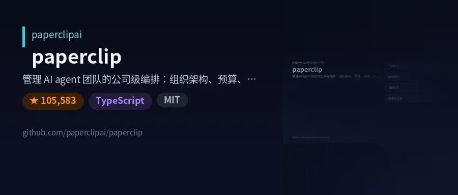
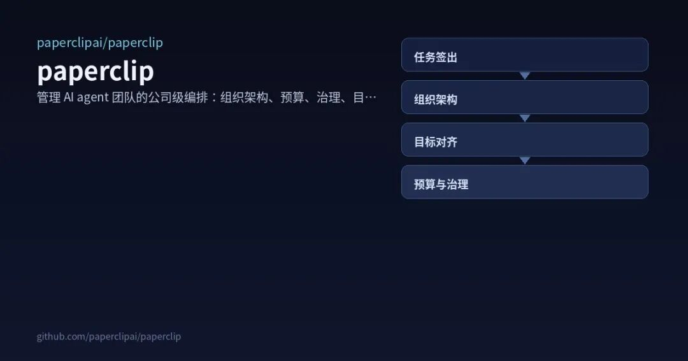
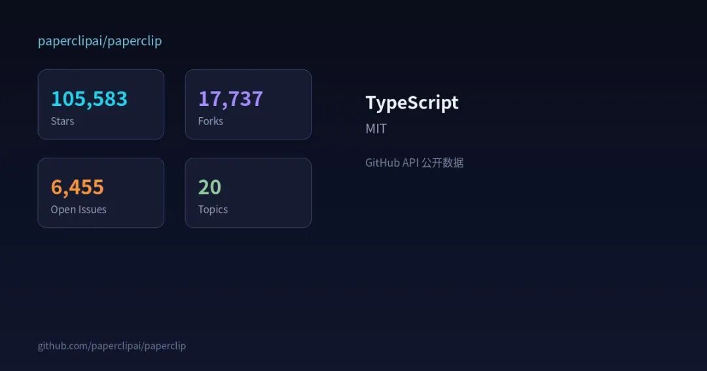

10.6 万 star 的 agent 编排台：把一群 agent 组织成一家公司
查看微信原文 ↗10.6 万 star 的 agent 编排台：把一群 agent 组织成一家公司

paperclipai/paperclip · Agent 与智能体 · 技能包 · ★ 105,583（数字在变） · TypeScript · MIT它用了两个角色打比方
Paperclip 的 README 里有句话挺抓人：
员工会干活，但公司得有架构、预算、流程和治理。
它想做的是后半个角色。

图：项目结构 来源：https://github.com/paperclipai/paperclip
四个支柱
README 写得很清楚，一个 AI agent 组织要真能干活，有四件事必须成立：
- 任务
（tasks） - 组织
（org） - 培训
（training） - 基础设施
（infrastructure）
Paperclip 就架在这四根柱子上。
四个功能值得看
1. Bring Your Own Agent
任何 agent、任何运行时，只要它能收到「心跳」，就算被录用了。
这个设计很聪明。它不跟任何一家 agent 框架绑定，等于一个编排层而不是框架。
2. 心跳机制
agent 不是你一直盯着，它按 assigned 的任务自己醒过来干活。
这解决的是 agent 编排里最烦的一件事：怎么让一堆进程自己排队而不是你手动一个个触发。
3. 目标对齐
任务和项目能挂到组织目标上，agent 收到的不只是「做什么」，还有「为什么做」。
这在做多 agent 团队时是分水岭。没有目标上下文的 agent 只会把任务做完，做不到位。
4. 原子任务签出
README 的对比表里专门列了这一条：任务签出是原子的。
意思是同一个任务不会被两个 agent 同时领走。听着是常识，实现起来坑不少。
谁该看
几个数
GitHub topics：agentaiagentsllmorchestrationplatformteamworkspace
— — —
仓库：https://github.com/paperclipai/paperclip

图：paperclipai/paperclip 的公开数据 来源：https://github.com/paperclipai/paperclip